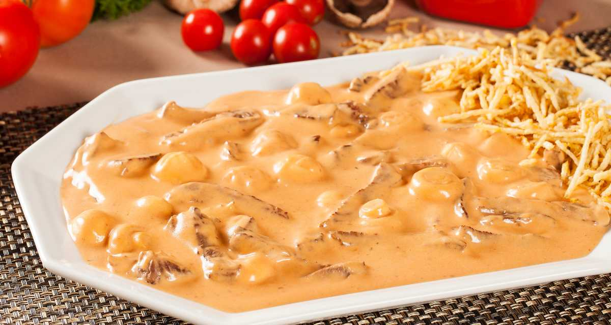

Return to the main page.

Stroganoff is a popular Russian food dish that is typically made from thinly sliced beef taken from a tender cut of meat, which is quickly sautéed in butter with sliced mushrooms and onions.
Ingredients
- 1 pound ground pork
- 1 large onion, chopped
- 1 green bell pepper, chopped
- 5 cloves garlic, chopped
- 2 tablespoons taco seasoning mix
- 3 tablespoons all-purpose flour
- 2 cups beef broth
- 1 (10.75 ounce) can condensed cream of mushroom soup
- 1 cup milk, or as needed
- 3 slices American cheese, cut into pieces
- salt and black pepper to taste
Steps
-
Brown the pork in a large skillet over medium heat for about 10 minutes, breaking up the pork as it cooks, until the meat is no longer pink inside. Stir in the onion, green pepper, and garlic, and cook and stir for another 10 minutes, until the onion is translucent. Sprinkle on the taco seasoning, stir to incorporate, then mix in the flour. Stir the mixture, pour in the beef broth, and bring to a boil. Cook and stir the mixture for about 5 more minutes, until it starts to thicken.
-
Mix in the mushroom soup and milk, bring back to a boil, and add the American cheese. Cook and stir the stroganoff for 5 minutes, until the cheese has melted and the mixture is bubbling. Add salt and pepper to taste, and serve hot.